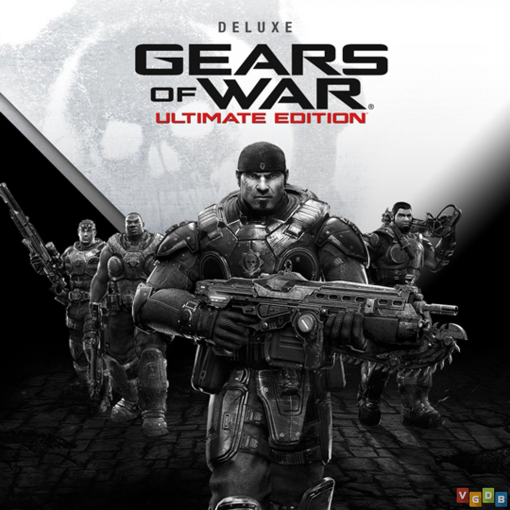

Recomendações

Após a derrota de Calamity Ganon, Link liberta Zelda e ambos se aventuram dentro do castelo de Hyrule. Lá
eles encontram um corpo mumificado que remete ao de Ganondorf e, então, uma energia maligna desperta e
separa o herói e a princesa.
Dishonored conta uma história sombria com uma ação furtiva. se passa na cidade industrial de Dunwall e
conta a história de Corvo Atano, um guarda costas lendário da Imperatriz. Ele é vítima de conspiração ao ser
acusado de assassiná-la.

Gears of War: Ultimate Edition é a versão remasterizada do primeiro game da série, que chegará ao Xbox One
com gráficos em alta definição.
Multiplayer
Resident Evil 4 se passa 6 anos após os acontecimentos de Raccoon City e traz Leon Kennedy em uma missão para resgatar a filha do presidente dos Estados Unidos, Ashley Graham, que foi sequestrada por uma seita macabra chamada Los Illuminados.
O jogador controla um aluno matriculado na Escola de Magia e Bruxaria de Hogwarts que aprende a manejar uma série de habilidades e objetos mágicos.

Após a derrota de Calamity Ganon, Link liberta Zelda e ambos se aventuram dentro do castelo de Hyrule. Lá
eles encontram um corpo mumificado que remete ao de Ganondorf e, então, uma energia maligna desperta e
separa o herói e a princesa.